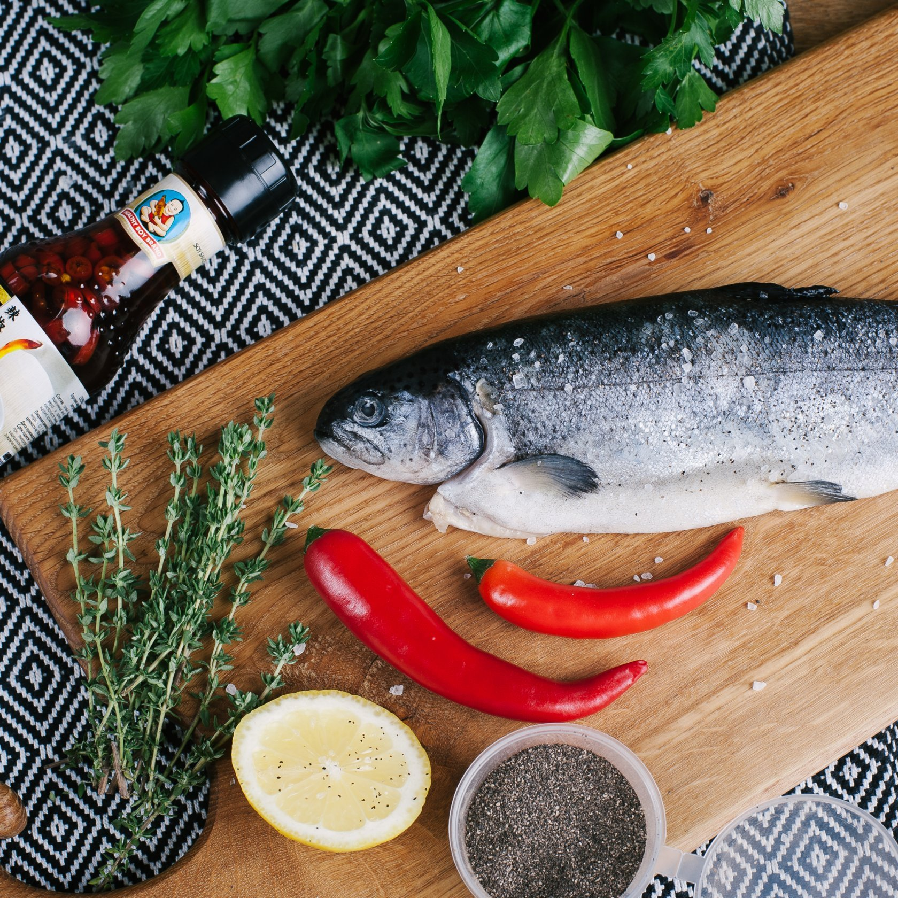

Во-первых, это качество. Мы изучаем предложения поставщиков и выбираем только рыбу свежего завоза и не вымороженную. Мы закупаем рыбу, быстро замороженную после поимки прямо на промысле и ни разу с тех пор не размораживавшуюся: покупатель разморозит её сам уже дома. В лавке её быстро разбирают, а склада у нас нет, весь наш товар лежит в прилавках-холодильниках. Поэтому рыба не залеживается, мы постоянно подвозим свежемороженую продукцию.